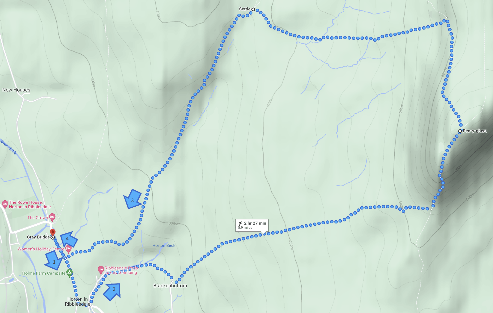
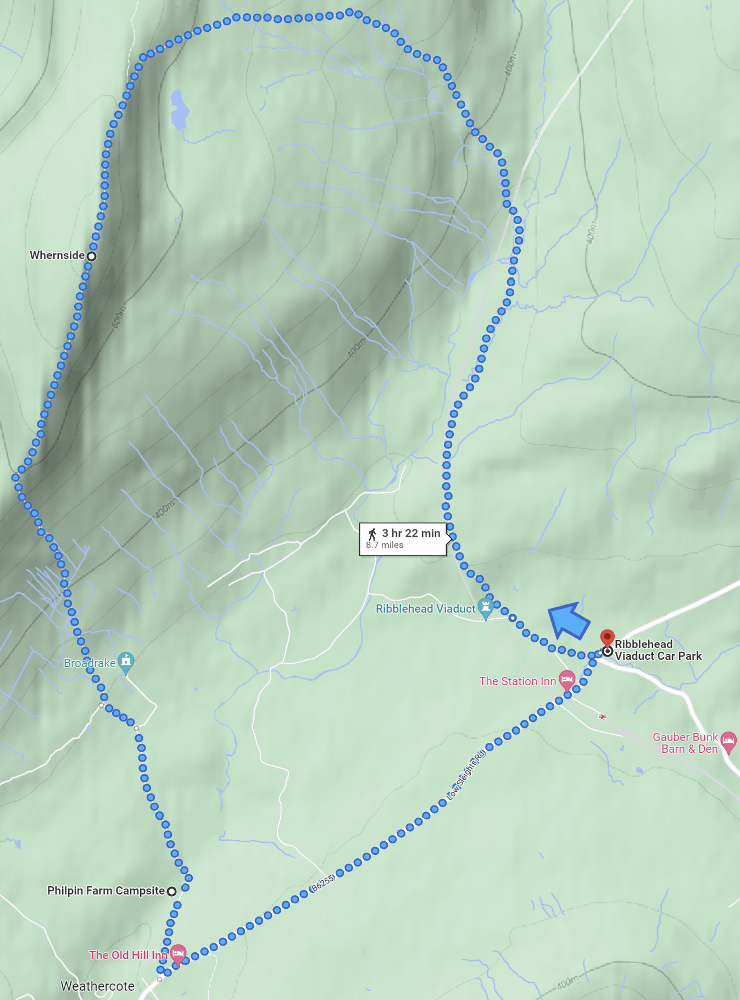
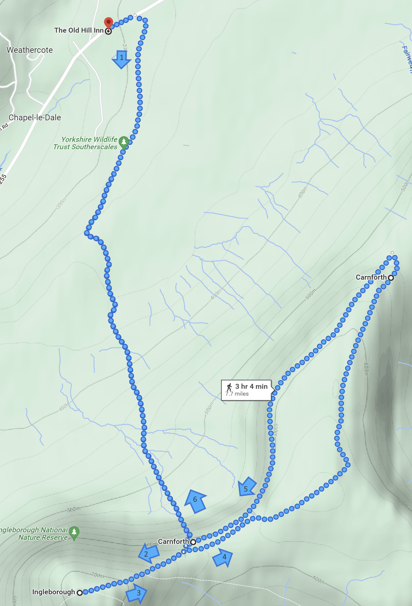

Pen-y-ghent Route
- Start Point: Horton in Ribblesdale
- Distance: 6 miles / 9.6 km
- Average Time: 2 hours & 30 minutes
- Elevation: 694 meters / 2,277 feet

Whernside Route
- Start Point: Ribblehead Viaduct
- Distance: 9 miles / 14.4km
- Average Time: 3 hours & 30 minutes
- Elevation: 736 meters / 2,415 feet

Ingleborough Route
- Start Point: The Old Hill Inn
- Distance: 8 miles / 12.8 km
- Average Time: 3 hours & 10 minutes
- Elevation: 723 meters / 2,372 feet